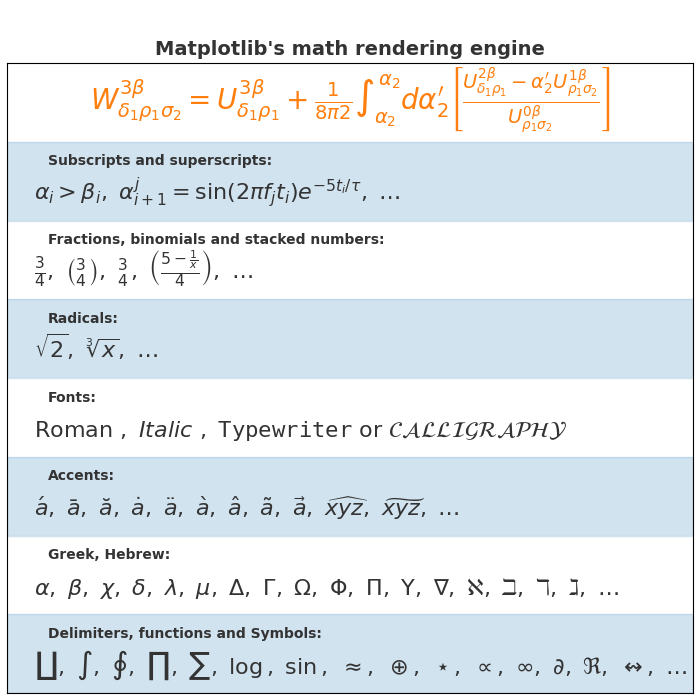

Note
Go to the end to download the full example code
Mathtext Examples#
Selected features of Matplotlib's math rendering engine.
0 $W^{3\beta}_{\delta_1 \rho_1 \sigma_2} = U^{3\beta}_{\delta_1 \rho_1} + \frac{1}{8 \pi 2} \int^{\alpha_2}_{\alpha_2} d \alpha^\prime_2 \left[\frac{ U^{2\beta}_{\delta_1 \rho_1} - \alpha^\prime_2U^{1\beta}_{\rho_1 \sigma_2} }{U^{0\beta}_{\rho_1 \sigma_2}}\right]$
1 $\alpha_i > \beta_i,\ \alpha_{i+1}^j = {\rm sin}(2\pi f_j t_i) e^{-5 t_i/\tau},\ \ldots$
2 $\frac{3}{4},\ \binom{3}{4},\ \genfrac{}{}{0}{}{3}{4},\ \left(\frac{5 - \frac{1}{x}}{4}\right),\ \ldots$
3 $\sqrt{2},\ \sqrt[3]{x},\ \ldots$
4 $\mathrm{Roman}\ , \ \mathit{Italic}\ , \ \mathtt{Typewriter} \ \mathrm{or}\ \mathcal{CALLIGRAPHY}$
5 $\acute a,\ \bar a,\ \breve a,\ \dot a,\ \ddot a, \ \grave a, \ \hat a,\ \tilde a,\ \vec a,\ \widehat{xyz},\ \widetilde{xyz},\ \ldots$
6 $\alpha,\ \beta,\ \chi,\ \delta,\ \lambda,\ \mu,\ \Delta,\ \Gamma,\ \Omega,\ \Phi,\ \Pi,\ \Upsilon,\ \nabla,\ \aleph,\ \beth,\ \daleth,\ \gimel,\ \ldots$
7 $\coprod,\ \int,\ \oint,\ \prod,\ \sum,\ \log,\ \sin,\ \approx,\ \oplus,\ \star,\ \varpropto,\ \infty,\ \partial,\ \Re,\ \leftrightsquigarrow, \ \ldots$
import re
import subprocess
import sys
import matplotlib.pyplot as plt
# Selection of features following "Writing mathematical expressions" tutorial,
# with randomly picked examples.
mathtext_demos = {
"Header demo":
r"$W^{3\beta}_{\delta_1 \rho_1 \sigma_2} = "
r"U^{3\beta}_{\delta_1 \rho_1} + \frac{1}{8 \pi 2} "
r"\int^{\alpha_2}_{\alpha_2} d \alpha^\prime_2 \left[\frac{ "
r"U^{2\beta}_{\delta_1 \rho_1} - \alpha^\prime_2U^{1\beta}_"
r"{\rho_1 \sigma_2} }{U^{0\beta}_{\rho_1 \sigma_2}}\right]$",
"Subscripts and superscripts":
r"$\alpha_i > \beta_i,\ "
r"\alpha_{i+1}^j = {\rm sin}(2\pi f_j t_i) e^{-5 t_i/\tau},\ "
r"\ldots$",
"Fractions, binomials and stacked numbers":
r"$\frac{3}{4},\ \binom{3}{4},\ \genfrac{}{}{0}{}{3}{4},\ "
r"\left(\frac{5 - \frac{1}{x}}{4}\right),\ \ldots$",
"Radicals":
r"$\sqrt{2},\ \sqrt[3]{x},\ \ldots$",
"Fonts":
r"$\mathrm{Roman}\ , \ \mathit{Italic}\ , \ \mathtt{Typewriter} \ "
r"\mathrm{or}\ \mathcal{CALLIGRAPHY}$",
"Accents":
r"$\acute a,\ \bar a,\ \breve a,\ \dot a,\ \ddot a, \ \grave a, \ "
r"\hat a,\ \tilde a,\ \vec a,\ \widehat{xyz},\ \widetilde{xyz},\ "
r"\ldots$",
"Greek, Hebrew":
r"$\alpha,\ \beta,\ \chi,\ \delta,\ \lambda,\ \mu,\ "
r"\Delta,\ \Gamma,\ \Omega,\ \Phi,\ \Pi,\ \Upsilon,\ \nabla,\ "
r"\aleph,\ \beth,\ \daleth,\ \gimel,\ \ldots$",
"Delimiters, functions and Symbols":
r"$\coprod,\ \int,\ \oint,\ \prod,\ \sum,\ "
r"\log,\ \sin,\ \approx,\ \oplus,\ \star,\ \varpropto,\ "
r"\infty,\ \partial,\ \Re,\ \leftrightsquigarrow, \ \ldots$",
}
n_lines = len(mathtext_demos)
def doall():
# Colors used in Matplotlib online documentation.
mpl_grey_rgb = (51 / 255, 51 / 255, 51 / 255)
# Creating figure and axis.
fig = plt.figure(figsize=(7, 7))
ax = fig.add_axes([0.01, 0.01, 0.98, 0.90],
facecolor="white", frameon=True)
ax.set_xlim(0, 1)
ax.set_ylim(0, 1)
ax.set_title("Matplotlib's math rendering engine",
color=mpl_grey_rgb, fontsize=14, weight='bold')
ax.set_xticks([])
ax.set_yticks([])
# Gap between lines in axes coords
line_axesfrac = 1 / n_lines
# Plot header demonstration formula.
full_demo = mathtext_demos['Header demo']
ax.annotate(full_demo,
xy=(0.5, 1. - 0.59 * line_axesfrac),
color='tab:orange', ha='center', fontsize=20)
# Plot feature demonstration formulae.
for i_line, (title, demo) in enumerate(mathtext_demos.items()):
print(i_line, demo)
if i_line == 0:
continue
baseline = 1 - i_line * line_axesfrac
baseline_next = baseline - line_axesfrac
fill_color = ['white', 'tab:blue'][i_line % 2]
ax.axhspan(baseline, baseline_next, color=fill_color, alpha=0.2)
ax.annotate(f'{title}:',
xy=(0.06, baseline - 0.3 * line_axesfrac),
color=mpl_grey_rgb, weight='bold')
ax.annotate(demo,
xy=(0.04, baseline - 0.75 * line_axesfrac),
color=mpl_grey_rgb, fontsize=16)
plt.show()
if '--latex' in sys.argv:
# Run: python mathtext_examples.py --latex
# Need amsmath and amssymb packages.
with open("mathtext_examples.ltx", "w") as fd:
fd.write("\\documentclass{article}\n")
fd.write("\\usepackage{amsmath, amssymb}\n")
fd.write("\\begin{document}\n")
fd.write("\\begin{enumerate}\n")
for s in mathtext_demos.values():
s = re.sub(r"(?<!\\)\$", "$$", s)
fd.write("\\item %s\n" % s)
fd.write("\\end{enumerate}\n")
fd.write("\\end{document}\n")
subprocess.call(["pdflatex", "mathtext_examples.ltx"])
else:
doall()